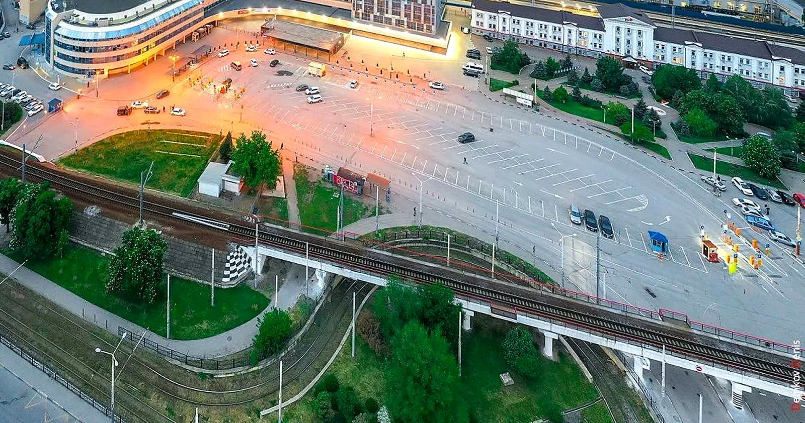
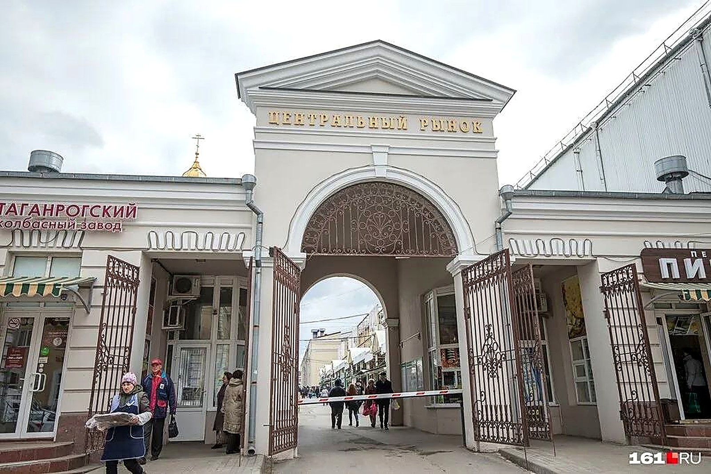
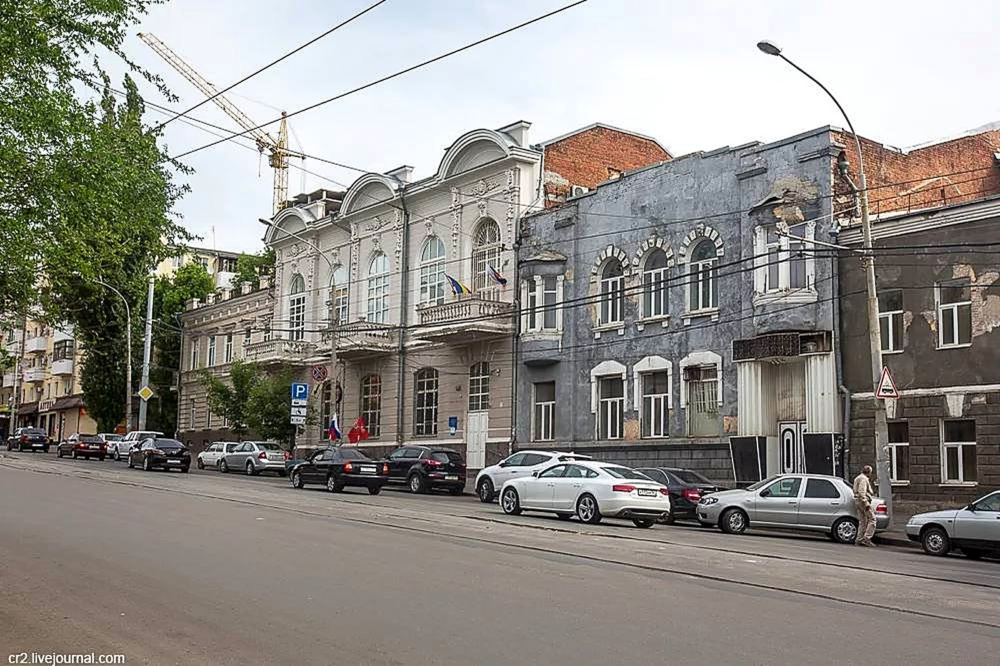
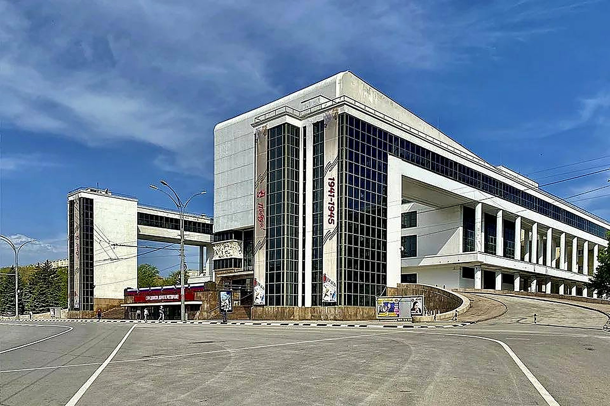
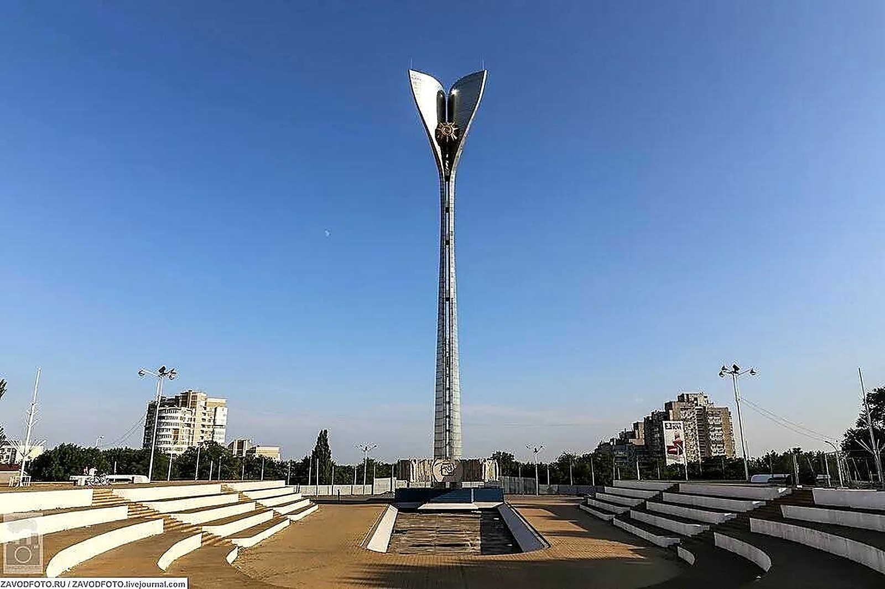
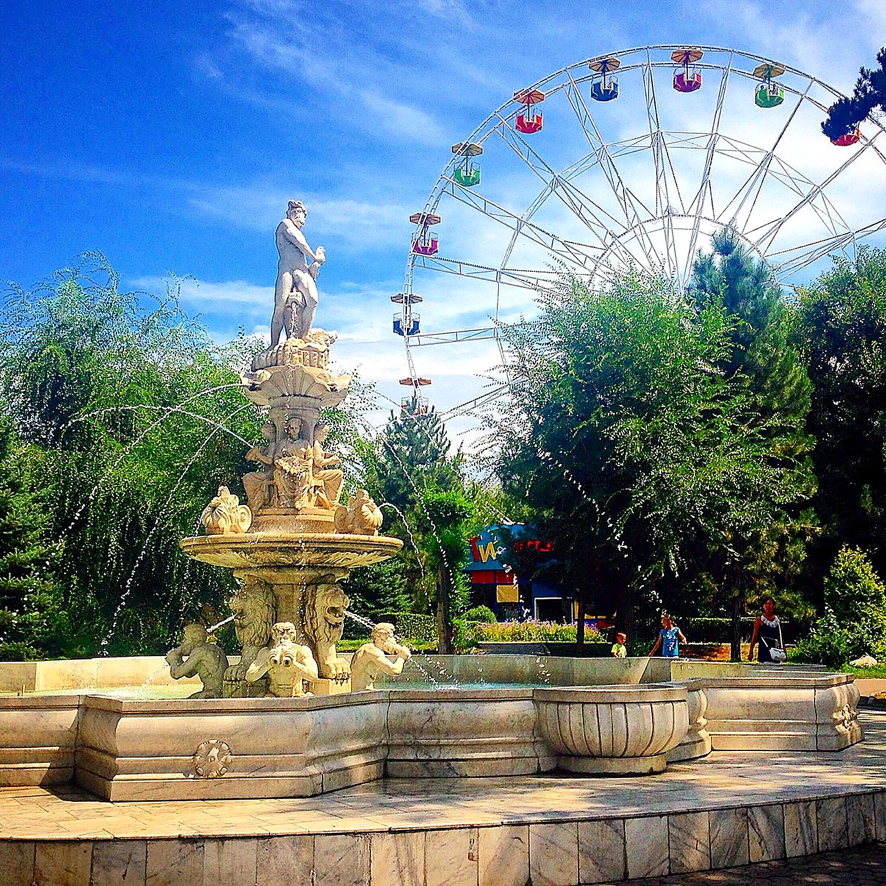

↖ Привокзальная площадьТакси, трамваи, суета
↑ Центральный рынокКрытые ряды и южные запахи
↗ НахичеваньАрмянская церковь Сурб-Хач
← Театр драмы имени ГорькогоЗдание в форме трактора
Цель: найти Академию архитектуры и искусств ЮФУ
Стела «Освободителям Ростова»
Высокая стела на Театральной площади с Вечным огнём, памятник освободителям города.
Подсказка: Академии здесь нет. Загляните к белому зданию с колоннами и бюстом у входа.

→ Парк имени ГорькогоКолесо обозрения ↙ Здание городской думыАдминистративное здание на Садовой
↙ Здание городской думыАдминистративное здание на Садовой
 ↓ Особняк ПарамоноваКупеческий особняк
↓ Особняк ПарамоноваКупеческий особняк
 ↘ Дом Маргариты ЧерновойФигуры-колонны на фасаде
↘ Дом Маргариты ЧерновойФигуры-колонны на фасаде